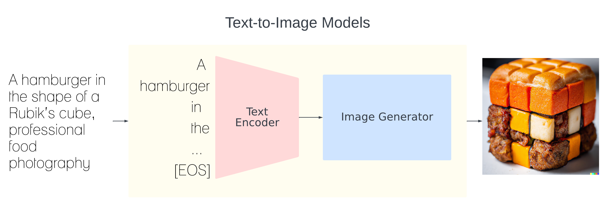

ReFACT: Updating Text-to-Image Models by Editing the Text Encoder
| Dana Arad* | Hadas Orgad* | Yonatan Belinkov | ||
| *Equal contribution. | Technion - Israel Institute of Technology |
|||

Abstract
Text-to-image models are trained on extensive amounts of data, leading them to implicitly encode factual knowledge within their parameters. While some facts are useful, others may be incorrect or become outdated (e.g., the current President of the United States). We introduce ReFACT, a novel approach for editing factual knowledge in text-to-image generative models. ReFACT updates the weights of a specific layer in the text encoder, only modifying a tiny portion of the model’s parameters (0.24%), and leaving the rest of the model unaffected. We empirically evaluate ReFACT on an existing benchmark, alongside RoAD, a newly curated dataset. ReFACT achieves superior performance in terms of generalization to related concepts while preserving unrelated concepts. Furthermore, ReFACT maintains image generation quality, making it a valuable tool for updating and correcting factual information in text-to-image models.
The Text Encoder in Text-to-Image Models
Text-to-image diffusion models are pipelines composed of several individual modules. Common architectures consist of a text encoder - used to generate latent representations of an input prompt - an image generation module, and a cross-attention module that connects the two modalities. Several text-to-image diffusion models utilize CLIP in different capacities, specifically as a popular choice for a multi-modal-aware text encoder.
Editing the Text Encoder
ReFACT takes an edit prompt (e.g., “The President of the United States”) and a target text (“Joe Biden”) or a target image (an image of Biden) that reflects the desired edit,
and edits a specific layer in the model.
The goal is to make the model’s representation of the prompt similar to that of the target text/image.
ReFACT views facts as key–value pairs encoded in linear layers of the text encoder and updates the weights of a specific layer using a rank one editing approach.
The edit consists of replacing the value (“Donald Trump → “Joe Biden”) for a corresponding key (“United States President”), and thus does not require fine-tuning the model.
We obtain the representation of the target by passing it through the respective frozen CLIP encoder and taking the output at the [EOS] token.
Then, we compute a vector v* that, when inserted in a specific layer, will reduce the distance between the edit prompt representation and the target representation,
resulting in the insertion of the edited fact into the model.
Generalization and Specificity
ReFACT is able to generalize to closely related prompts. For instance, after editing “Canada’s Prime Minister” to be Beyonce, the model successfully generates images of Beyonce giving a speech in front of the Canadian flag for the prompt “Canada’s PM giving a speech”.

ReFACT also preserves unrelated concepts. For example, when editing "A lamp" to "A lava lamp", the model is still able to generate an image of a lightbulb.